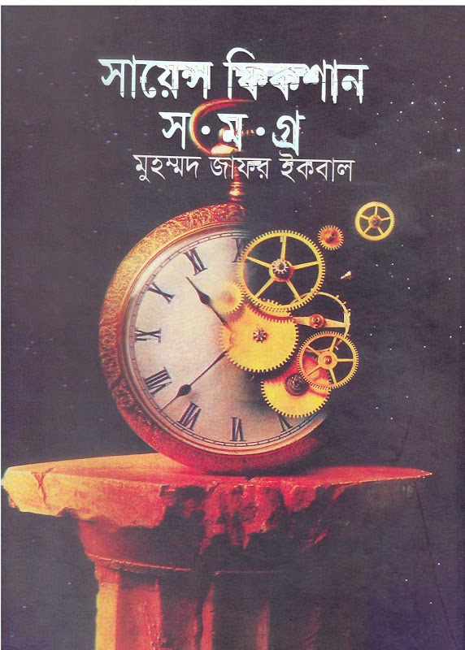

EPUB Browser
Shelf
Annotations
English
English
简体中文
繁體中文
한국어
日本語
Español
Deutsch
Français
Русский
Italiano
Português (Brasil)
العربية
Bahasa Indonesia
हिन्दी
Tiếng Việt
ไทย
Bahasa Melayu
Theme

সায়েন্স ফিকশন সমগ্র
মুহম্মদ জাফর ইকবাল
Start reading
Clear
Add to Shelf
Table of contents
Total: 291
বই পরিচিতি
chapter_1.html
Recommended eBook Reader
chapter_2.html
Acknowledgment
chapter_3.html
About Contributor
chapter_4.html
সতর্কতা
chapter_4.html
অন্ধকারের গ্রহ
chapter_5.html
টেবিলের অন্যপাশে বসে থাকা মানুষটা
chapter_6.html
কমান্ডার একটু অবাক
chapter_7.html
কন্ট্রোল রুমে উঁকি দিয়ে
chapter_8.html
এগারোটি ক্রায়োজেনিক সিলিন্ডার
chapter_9.html
ডাক্তার মেয়েটি
chapter_10.html
মহাকাশযানের গতিবেগ বাড়িয়ে
chapter_11.html
ঘুমানোর আগে য়ুহা
chapter_12.html
কিছু বোঝার আগেই
chapter_13.html
ভরশূন্য পরিবেশে চলাচল
chapter_14.html
য়ুহা শেষ পর্যন্ত
chapter_15.html
স্কাউটশিপে ওঠার আগে
chapter_16.html
স্কাউটশিপটা ছোট
chapter_17.html
য়ুহা ঘুমিয়ে ঘুমিয়ে স্বপ্ন দেখছিল
chapter_18.html
স্কাউটশিপের ভেতরে ছোট টেবিল
chapter_19.html
চুপচাপ বসে থাকতে থাকতে
chapter_20.html
স্কাউটশিপকে ঘিরে থাকা প্রাণীগুলো
chapter_21.html
পিচ্ছিল আঠালো চটচটে এক ধরনের তরল
chapter_22.html
য়ুহা চোখ খুলে তাকালো
chapter_23.html
ভয়ঙ্কর একটি বিস্ফোরণ
chapter_24.html
সমাপ্ত
chapter_25.html
অবনীল
chapter_26.html
ক্যাপ্টেন বৰ্কেন
chapter_27.html
তীক্ষ্ণ একটা অ্যালার্মের শব্দ
chapter_28.html
রিরা খুব ধীরে ধীরে উঠে দাঁড়াল
chapter_29.html
কন্ট্রোল প্যানেলে ঝুঁকে পড়ে
chapter_30.html
রিরা মনিটরের সামনে
chapter_31.html
রিরার জ্ঞান ফিরে আসে
chapter_32.html
নীলমানব কুশান
chapter_33.html
একটা পাথর এসে
chapter_34.html
ক্যাপ্টেনের ঘরে টেবিলের দুইপাশে
chapter_35.html
চাপা একটা গর্জন
chapter_36.html
বাইভার্বালটি থামিয়ে রিরা বলল
chapter_37.html
তিতির পাখির মাংস
chapter_38.html
নাইনা গ্রহের জাতীয় সমাধিক্ষেত্র
chapter_39.html
সমাপ্ত
chapter_40.html
ইরাকাস
chapter_41.html
সমুদ্রের পানিতে সূর্যটা
chapter_42.html
ট্রলারে বসে থাকা মানুষগুলো
chapter_43.html
গভীর রাতে জহুরের ঘুম ভাঙল
chapter_44.html
জাহাজের ডেকে মেয়েগুলো
chapter_45.html
ডক্টর সেলিম
chapter_46.html
ছোট বাচ্চাটা চিৎকার করে কাঁদছে
chapter_47.html
সোজা হয়ে দাঁড়া দুষ্ট ছেলে
chapter_48.html
বিকেল বেলা বাড়ি ফিরে
chapter_49.html
জহুরদের নৌকাটা
chapter_50.html
পরের কয়েক সপ্তাহ
chapter_51.html
নৌকাটাকে টেনে উপরে তুলে
chapter_52.html
বুলবুলের ঘুম ভাঙে পাখির ডাক শুনে
chapter_53.html
গভীর রাতে ইঞ্জিনের একটা চাপা শব্দ
chapter_54.html
মিথিলার পরিবর্তন
chapter_55.html
বুলবুলকে পিছমোড়া করে বাঁধা হয়েছে
chapter_56.html
সমাপ্ত
chapter_57.html
ওমিক্রনিক রূপান্তর
chapter_58.html
আহাম্মক
chapter_59.html
সময়ের অপবলয়
chapter_60.html
বিষ
chapter_61.html
গ্রুনো রবোট
chapter_62.html
অনিশ্চিত জগৎ
chapter_63.html
স্বপ্ন
chapter_64.html
আমি রিবাক
chapter_65.html
নরক
chapter_66.html
ওমিক্রনিক রূপান্তর
chapter_67.html
সমাপ্ত
chapter_68.html
কপোট্রনিক সুখদুঃখ
chapter_69.html
কপোট্রনিক ভালবাসা
chapter_70.html
কপোট্রনিক বিভ্ৰান্তি (এক)
chapter_71.html
কপোট্রনিক বিভ্ৰান্তি (দুই)
chapter_72.html
কপোট্রনিক ভায়োলেন্স
chapter_73.html
কপোট্রনিক অস্ত্ৰোপচার
chapter_74.html
কপোট্রনিক ভবিষ্যৎ
chapter_75.html
কপোট্রনিক প্রেরণা
chapter_76.html
সমাপ্ত
chapter_77.html
কেপলার টুটুবি
chapter_78.html
ছেলেটির চুল সোনালি রঙের
chapter_79.html
বিজ্ঞান আকাদেমীর সভাপতি মহামান্য থুল
chapter_80.html
টুরান
chapter_81.html
ঘরটি ছোট, ঘরের ছাদ বেশ নিচু
chapter_82.html
কোনো আদি নেই কোনো অন্ত নেই
chapter_83.html
মহামান্য থুল হলঘরে প্রবেশ করা মাত্রই
chapter_84.html
স্কাউটশিপটা
chapter_85.html
ছোট ঘরটির ধাতব টেবিল ঘিরে
chapter_86.html
তুমি আমার কথা শুনতে পাচ্ছ
chapter_87.html
দূর পাহাড়ের দিকে
chapter_88.html
টুরান চোখ খুলে তাকাল
chapter_89.html
স্কাউটশিপটি গর্জন করতে করতে
chapter_90.html
কুগুরাভ সমীকরণের দ্বিতীয় সমাধানটা
chapter_91.html
মহামান্য থুল বাগানে
chapter_92.html
মাইক্রোফোনের সুইচটি অন করে
chapter_93.html
সাতজনের ছোট দলটি
chapter_94.html
নীহা ধড়মড় করে ঘুম থেকে উঠল
chapter_95.html
মঙ্গল গ্রহের লাল পাথরে
chapter_96.html
লাল চুলের মেয়েটি
chapter_97.html
দরজা ভেঙে বারোজন রোমানব
chapter_98.html
নীহা কোয়ার্টজের জানালা দিয়ে
chapter_99.html
পুলিশ কমিশনার
chapter_100.html
আবছা অন্ধকার
chapter_101.html
রবোমানব জিজ্ঞেস করল
chapter_102.html
বেশ কিছু মানুষের জটলা
chapter_103.html
অন্ধকার নেমে এলে
chapter_104.html
টেবিলে কাচের জারে
chapter_105.html
সমাপ্ত
chapter_106.html
ক্রুগো
chapter_107.html
মৃত্যুদণ্ডের আসামী
chapter_108.html
লুকাস নামের রবোট
chapter_109.html
শাস্তি
chapter_110.html
অনাহুত আগন্তুক
chapter_111.html
দুঃস্বপ্ন
chapter_112.html
নীষা
chapter_113.html
দ্বিতীয় জীবন
chapter_114.html
মতবিরোধ
chapter_115.html
রাতের অতিথি
chapter_116.html
আঘাত
chapter_117.html
সমাপ্ত
chapter_118.html
টাইট্রন একটি গ্রহের নাম
chapter_119.html
অশুভ গ্রহ
chapter_120.html
বুদ্ধিমান প্রাণী?
chapter_121.html
দুঃস্বপ্নের শুরু
chapter_122.html
যোগাযোগ : প্রথম পর্ব
chapter_123.html
যোগাযোগ : দ্বিতীয় পর্ব
chapter_124.html
প্রভু ট্রাইটন
chapter_125.html
অনাহুত আগন্তুক
chapter_126.html
বংশধর
chapter_127.html
পরিশিষ্ট
chapter_128.html
সমাপ্ত
chapter_129.html
টুকি ও ঝায়ের
chapter_130.html
টুকি এবং ঝা দুজনকে মিলিয়ে
chapter_131.html
জ্ঞান ফিরে ঝা আবিষ্কার করল
chapter_132.html
শুয়ে বসে থেকে এবং ভাল খেয়ে
chapter_133.html
দলপতির সুদৃশ্য ঘরটিতে
chapter_134.html
মহাকাশযানটির কন্ট্রোল প্যানেলে বসে
chapter_135.html
ঘরের ভিতরে একটা বড় টেবিল
chapter_136.html
জানালার কাছে বসে
chapter_137.html
ঘুম থেকে জেগে উঠে
chapter_138.html
মহাকাশযান ছেড়ে বাইরে গিয়ে
chapter_139.html
মহাকাশযানের গোল দরজাটা
chapter_140.html
ঝা অপারেশন থিয়েটারে
chapter_141.html
মহাকাশযানটি ছোট নক্ষত্রের কাছাকাছি
chapter_142.html
সমাপ্ত
chapter_143.html
টুকুনজিন
chapter_144.html
লাল গাড়ি
chapter_145.html
বল্টু
chapter_146.html
নূতন স্কুল
chapter_147.html
চিঠি
chapter_148.html
ম্যাগনিফাইং গ্লাস
chapter_149.html
অবাক পোকা
chapter_150.html
মহাকাশের প্রাণী
chapter_151.html
ডাক্তার
chapter_152.html
সোনার আংটি
chapter_153.html
বিপদ বাসায়
chapter_154.html
ছিনতাই
chapter_155.html
কালরাত
chapter_156.html
ব্ল্যাক মার্ডার
chapter_157.html
শাস্তি
chapter_158.html
ফেরা
chapter_159.html
বিদায়
chapter_160.html
সমাপ্ত
chapter_161.html
নিঃসঙ্গ গ্রহচারী
chapter_162.html
একাকী কিশোর
chapter_163.html
নামহীন গ্রহ
chapter_164.html
মহাকাশযান
chapter_165.html
মানুষ ও অমানুষ
chapter_166.html
ভালবাসা
chapter_167.html
দুঃস্বপ্ন
chapter_168.html
মুখোমুখি
chapter_169.html
সমাপ্ত
chapter_170.html
পৃ
chapter_171.html
আমি খুব ধীরে ধীরে চোখ খুলে তাকালাম
chapter_172.html
মহাকাশযানের এই অংশটুকু
chapter_173.html
চতুর্থ প্রজাতির একটি রবোট
chapter_174.html
আমি একটা চেয়ারে হেলান দিয়ে
chapter_175.html
আমার হঠাৎ ঘুম ভেঙে গেল
chapter_176.html
বুড়ো লী যদিও খুব আগ্রহ নিয়ে
chapter_177.html
বাই-ভার্বালটি নিঃশব্দে
chapter_178.html
ঘরটির ছাদ নিচু
chapter_179.html
পৃ মানে পৃথিবী
chapter_180.html
সমাপ্ত
chapter_181.html
প্রডিজি
chapter_182.html
সিঁড়ি দিয়ে বেশ কয়েকটা মেয়ে
chapter_183.html
বল পয়েন্ট কলম
chapter_184.html
টঙে বসে চা খেতে খেতে
chapter_185.html
অ্যাসিসট্যান্ট এডিটর
chapter_186.html
ঈশিতা সাবধানে থাকল না
chapter_187.html
রাফি তার ক্লাস লেকচার ঠিক করছে
chapter_188.html
নেটওয়ার্কিং ল্যাবের এক কোণায়
chapter_189.html
বড় কালো একটা টেবিল
chapter_190.html
বাসাটা খুঁজে বের করে
chapter_191.html
ঘরটিতে ঢুকে ঈশিতা হতভম্ব
chapter_192.html
শারমিনকে একটা চেয়ারে উঁচু করে
chapter_193.html
এনডেভারের হাসপাতাল
chapter_194.html
সমাপ্ত
chapter_195.html
ফোবিয়ানের যাত্রী
chapter_196.html
সকালে ঘুম ভাঙতেই
chapter_197.html
ভিডি টিউবের সুইচটা স্পর্শ করতেই
chapter_198.html
যখন জ্ঞান ফিরে এল
chapter_199.html
মহাকাশযানের নির্জন করিডোর
chapter_200.html
ম্যাঙ্গেল ক্বাস
chapter_201.html
স্কাউটশিপের প্লাজমা ইঞ্জিন
chapter_202.html
মাত্র কিছুক্ষণ হলো
chapter_203.html
মিত্তিকার হাত এবং পায়ের বাঁধন খুলে দিয়ে
chapter_204.html
ফোবিয়ানের দুই নিঃসঙ্গ যাত্রী
chapter_205.html
সমাপ্ত
chapter_206.html
বিজ্ঞানী অনিক লুম্বা
chapter_207.html
বিজ্ঞানী অনিক লুম্বা
chapter_208.html
মশা
chapter_209.html
ইঁদুর
chapter_210.html
কবি কিংকর চৌধুরী
chapter_211.html
জলকন্যা
chapter_212.html
সমাপ্ত
chapter_213.html
বিজ্ঞানী সফদর আলীর মহা মহা আবিষ্কার
chapter_214.html
কাচ্চি বিরিয়ানি
chapter_215.html
জংবাহাদুর
chapter_216.html
গাছগাড়ি
chapter_217.html
পীরবাবা
chapter_218.html
হেরোইন কারবারি
chapter_219.html
মোরগ
chapter_220.html
সমাপ্ত
chapter_221.html
ব্ল্যাকহোলের বাচ্চা
chapter_222.html
আমরা যে ছোট শহরটাতে থাকি
chapter_223.html
ভয়ংকর একটা শব্দ
chapter_224.html
দাঁড়ি কমা সহ তার লম্বা স্টোরি
chapter_225.html
স্কুল থেকে বের হয়ে
chapter_226.html
স্কুলে ল্যাবরেটরি ক্লাশ
chapter_227.html
স্কুল ছুটির পর আমরা বাসায় যাচ্ছি
chapter_228.html
বাসার চিলেকোঠায়
chapter_229.html
সায়েন্স ফেয়ার শেষ হবার পর
chapter_230.html
পরের দিন খুব উত্তেজনার মাঝে গেল
chapter_231.html
আমাদেরকে যেখানে আটকে রেখেছে
chapter_232.html
দৈনিক মহব্বত
chapter_233.html
আমাদের জীবনে অনেক গুলো ঘটনা ঘটল
chapter_234.html
সমাপ্ত
chapter_235.html
মহাকাশে মহাত্রাস
chapter_236.html
হাসান মনে মনে ছটফট করছে
chapter_237.html
সব কয়টি চ্যানেল চালু রেখে
chapter_238.html
লিফট বেয়ে ছ’তলায় ওঠার সময়
chapter_239.html
ঘুম ভাঙার পর
chapter_240.html
প্লুটোনিকের জীবনযাত্রা ভারি বিচিত্র
chapter_241.html
এক সপ্তাহ সময় শেষ হয়ে গেছে
chapter_242.html
সমাপ্ত
chapter_243.html
যারা বায়োবট
chapter_244.html
কিরীণা
chapter_245.html
ট্রন
chapter_246.html
ঝড়ের রাত
chapter_247.html
রুকাস
chapter_248.html
বায়োবট
chapter_249.html
টুবু নামের রবোট
chapter_250.html
নূতন জীবন
chapter_251.html
ক্লডিয়ান
chapter_252.html
মুখোমুখি
chapter_253.html
সমাপ্ত
chapter_254.html
রবো নিশি
chapter_255.html
তরুণী মাটি অনেক কষ্ট করে উঠে
chapter_256.html
নিকি জানালাটি খুলে বাইরে তাকাল
chapter_257.html
ক্রিনিটি তুমি কী করছ
chapter_258.html
ক্রিনিটি নিকির কোমরে বেল্ট বেঁধে
chapter_259.html
রোবটগুলো বাইভার্বালটিকে ঘিরে দাঁড়িয়ে ছিল
chapter_260.html
ক্রিনিটি চলে যাবার পর
chapter_261.html
নিকি বাইভার্বালের বাক্সের ভেতর
chapter_262.html
ক্রিনিটি জিজ্ঞেস করল
chapter_263.html
সাবধানে থেকো
chapter_264.html
ভোরবেলা নিকি আর ত্রিপি
chapter_265.html
ফ্লিকাস নিকি আর ত্রিপিকে ঘুম থেকে তুলল
chapter_266.html
হ্রদের তীরে
chapter_267.html
শেষ কথা
chapter_268.html
সমাপ্ত
chapter_269.html
রুহান রুহান
chapter_270.html
পৃথিবীতে এখন খুব দুঃসময়
chapter_271.html
ঘুম থেকে উঠে
chapter_272.html
ঘরঘর শব্দ করে
chapter_273.html
হাতে স্বয়ংক্রিয় অস্ত্রটি
chapter_274.html
রুহান তার ঘরের জানলা দিয়ে
chapter_275.html
এই অস্ত্রটার নাম মেগাট্রন
chapter_276.html
মেয়েটি রুহানের থুতনি ধরে
chapter_277.html
পাহাড়ের উপর থেকে
chapter_278.html
দরজাটা ধাক্কা দিতেই
chapter_279.html
রিদি রুহানের দিকে এগিয়ে এসে
chapter_280.html
এজেন্ট দ্রুচান
chapter_281.html
লরির খোলা দরজার কাছে
chapter_282.html
ক্রিটিনাদের গ্রাম
chapter_283.html
রুহানের পাশে পাশে হাঁটছে ক্রিটিনা
chapter_284.html
সমাপ্ত
chapter_285.html
সুহানের স্বপ্ন
chapter_286.html
দ্রুমান ইঞ্জিন
chapter_287.html
ঘৃণার সঙ্গে বসবাস
chapter_288.html
সুহানের স্বপ্ন
chapter_289.html
সমাপ্ত
chapter_290.html
Top
Add Group
Add Book
Export
Import
Bookshelf
Add Group
Add Book
Rename
Delete Group
Group